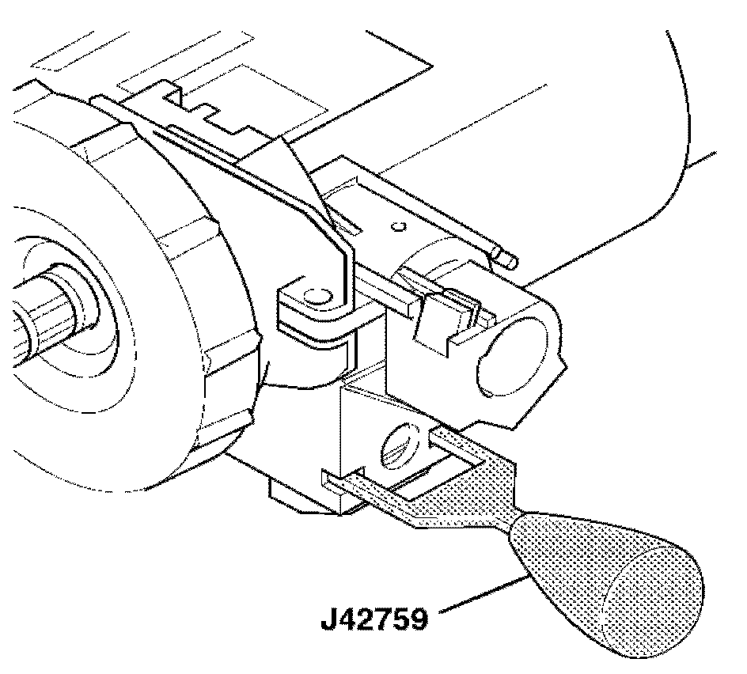
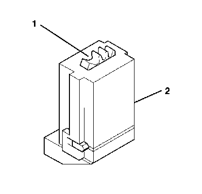
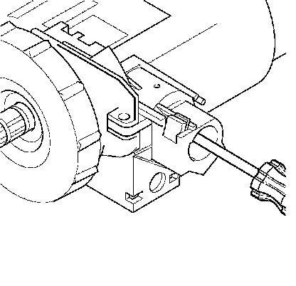
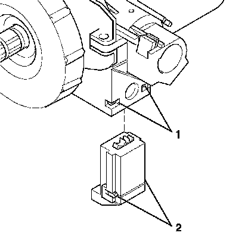

Ignition Switch: Service and Repair
Ignition and Start Switch Replacement
Special Tools
J 42759 Ignition Switch Connector Release Tool
Removal Procedure
Caution: Refer to SIR Caution.
1. Remove the theft deterrent module.
2. Disconnect the passlock and key buzzer from the ignition lock cylinder case.

3. Insert J 42759 into the ignition lock cylinder case to release the tabs on the ignition/start switch.
4. Pull the ignition/start switch out of the ignition lock cylinder case.
5. Disconnect the electrical connector from the ignition/start switch.
Installation Procedure

Important: The gears between the ignition/start switch and the ignition lock cylinder case must be in the correct position. Failure to do so will cause a misalignment of the gears in the ignition/start switch and the ignition lock cylinder case, which may result in a NO START or BATTERY DRAIN.
1. Verify the alignment of the gear (1) in the ignition/start switch (2). If gear (1) is not in position shown, turn gear in ignition/start switch (2) until you reach the correct position.

Important: In order to reach a stop while rotating the ignition lock cylinder case gear you MUST push and hold in the solenoid on the electric park lock.
2. Use a screwdriver to rotate the ignition lock cylinder case gear counterclockwise until it hits a stop.
3. Connect the connector to the ignition/start switch.

4. Insert the ignition/start switch into the ignition lock cylinder case. The tabs (2) on the ignition/start switch MUST be seated inside the ignition lock cylinder case (1) for proper installation.

5. Use a screwdriver to rotate the ignition lock cylinder case gear clockwise to the START position allowing it to spring return into the RUN position.
6. Connect the passlock and key buzzer to the ignition lock cylinder case.
7. Install the theft deterrent module.